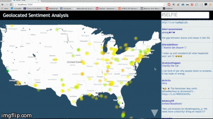

Chris Altonji
Creator; software, experiences.
Projects
About Me
I'm a third year Georgia Tech student. What does that mean to me? It means that I spend a lot of time following directions that people give me. It means that I know a lot of theoretical things. I take a lot of honors math classes.
I'm from Chicago but Atlanta is as much my home as anywhere. I work at AirWatch 9-5 and at Atlanta's coffee shops from 7-10. I've done some cool things before.
Right now most of my cranial energy is spent on organizing the Startup Exchange Fall Schedule and thinking up random hacks to make me look better and feel cooler.
Check out some of my projects and hipsterish pictures.
ShimmyCRM
A Customer Relationship Management platform built on top of Facebook's messenger.com. Uses a chrome extension to inject html interactive html and javascript into page.
Technologies: javascript, chrome extension
OahuJS

Allows any webpage viewer to act as a worker in a client-server relationship. Website owners add a single script tag in their page to make viewers into workers. Developers can utilize the processing power of client computers to carry out embarrassingly parallel processes
Awards: Top 10 Hacks, Top Web Hack and Best use of MongoDB at Calhacks (UCLA's collegiate hackathon)
Technologies: Node.js, web sockets
Samplify
Android App that identifies a song that's playing (like Shazam) and then also identifies all the samples that the song contains and gives you Youtube links to those songs at the spot in the song where the sample occurs.
Awards: 8,000 downloads, over 120,000 page views, Top 5 hacks at MHacksII by InternMatch, front page of reddit for 36 hours, >20 national and global articles.
Technologies: Android, web scraping
TweetMap

Visualizes how people are feeling about a topic, and where. It performs sentiment analysis in real-time on Tweets (favorable or unfavorable), maps the sentiment to a color (from green to red, respectively), and plots it on a map.
Awards: Best Data Visualization, HackGT (Georgia Tech's collegiate Hackathon)
Technologies: D3.js, Node.js, Twitter API, OAuth 2.0
SelfieAware

Analyzes your and your friend's instagram photos using facial recognition technologies to generate a score based on how many of your photos are selfies.
Technologies: Ruby On Rails, Rekognition (a facial recognition API)
Education
Georgia Tech
2013-2017.
Computer Science (BS)
- Director - Startup Exchange
- Alumni Chair - Sigma Phi Epsilon fraternity
Work Experience
AirWatch
Summer 2015 (present) - Atlanta, GA
Company one liner: Enterprise Mobility Management
Designing and Implementing distributed server side cacheing. AirWatch's servers communicate with up to 300,000 devices and each device checks into the server every 5 minutes. It is estimated that my cacheing will speed up each device check in by 20%. All my work for AirWatch is done in C#.
Geofeedia
Summer 2014 - Chicago, IL
Company one liner: Location Based Social Media Monitoring
Integrated the Geofeedia API with Motorola police terminals. Redesigned public facing Map Widget. Wrote script that uses twitter API to geolocate user's home address based on their past tweets. Wrote API scraper to get > 30,000 public facebook posts per day. Built inhouse video tutorial engine.
Ravinia

Summers 2011, 12, 13 - Highland Park, IL
Outdoor Music Venue
This is where I gained my taste for live music and love of the service industry.